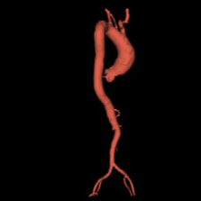
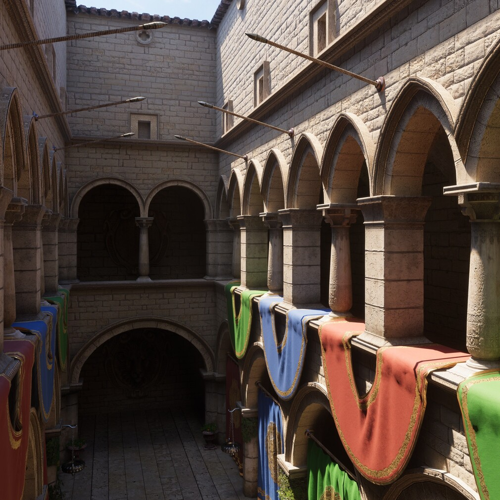

|
Lukas Radl Passionate about digitally representing the physical world
I'm a University Assistant/PhD Student at the Institute of Visual Computing, Graz University of Technology. I work on 3D Scene Representations for View Synthesis, supervised by Markus Steinberger. Previously, I received my Master's degree in Computer Science (with distinction) and my Bachelor's degree in Software Engineering both at Graz University of Technology between 2018 and 2023. During this time, I worked as a study assistant, supporting various visual computing classes. In 2019 & 2020, I was featured on the Dean's List of my faculty (top 5% of students). |
📰 News
|
🔬 ResearchMy research lies at the intersection of 3D, Computer Graphics, Computer Vision, Machine Learning, and Parallel Processing: My recent work focuses on Radiance Field Representations such as Neural Radiance Fields (NeRF) and Gaussian Splatting, aiming to make them more practical for real-time rendering and interactive applications. |
|
SOF: Sorted Opacity Fields for Fast Unbounded Surface Reconstruction
Lukas Radl, Felix Windisch, Thomas Deixelberger, Jozef Hladky, Michael Steiner, Dieter Schmalstieg, Markus Steinberger. SIGGRAPH Asia, 2025. We analyze and improve Gaussian Opacity Fields, and incorporate per-pixel sorting, exact depth and novel losses to enable rapid extraction of unbounded meshes from 3D Gaussians. |
|
|
Image-Based Spatio-Temporal Interpolation for Split
Rendering
Michael Steiner*, Thomas Köhler*, Lukas Radl, Brian Budge. Markus Steinberger. Computer Graphics Forum, 2025. We investigate a bidirectional reprojection method for challenging split rendering scenarios, and add a dynamic shadow encoding scheme and use auxiliary cameras to handle occlusions. |
|
|
AAA-Gaussians: Anti-Aliased and Artifact-Free 3D Gaussian
Rendering
Michael Steiner*, Thomas Köhler*, Lukas Radl, Felix Windisch, Dieter Schmalstieg, Markus Steinberger. ICCV, 2025 (Highlight). We introduce a method for Anti-Aliased and Artifact-Free (AAA) Gaussian Rendering, building on per-pixel resorting, view-adaptive filtering and view-space culling. |
|


|
VRSplat: Fast and
Robust Gaussian Splatting for Virtual Reality
Xuechang Tu, Lukas Radl, Michael Steiner, Markus Steinberger. Bernhard Kerbl, Fernando de la Torre. PACMCGIT, 2025. We combine StopThePop, Optimal Projection and Mini-Splatting with single-pass foveated rendering for view-consistent real-time rendering of Gaussian Splats on HMDs. |
|
Frustum Volume
Caching for Accelerated NeRF Rendering
Michael Steiner, Thomas Köhler, Lukas Radl, Markus Steinberger. PACMCGIT, 2024. We leverage the architecture of Instant-NGP to cache view-independent latent codes in a frustum voxel grid for high-quality real-time and offline rendering. |
|
|
StopThePop: Sorted Gaussian Splatting for
View-Consistent Real-time
Rendering
Lukas Radl*, Michael Steiner*, Mathias Parger, Alexander Weinrauch, Bernhard Kerbl, Markus Steinberger. SIGGRAPH, 2024 (Journal Track). Sorting 3D Gaussians along view rays leads to increased view-consistency. With our hierarchical, GPU-friendly resorting scheme, our renderer is only 4% slower than 3DGS on average. |
|
|
LAENeRF: Local Appearance Editing for Neural Radiance
Fields
Lukas Radl, Michael Steiner, Andreas Kurz, Markus Steinberger. CVPR, 2024. Locally Stylized Neural Radiance Fields via point-based 3D style transfer with geometry-aware losses - reduced background artefacts, more detail retention and view-consistency. |
|
|
Analyzing the Internals of Neural Radiance
Fields
Lukas Radl, Andreas Kurz, Michael Steiner, Markus Steinberger. CVPR Workshop on Neural Rendering Intelligence, 2024. Using density estimates derived from activations for inverse transform sampling in NeRFs allows for faster inference and comparable visual quality. |
|
|
 |
AVT: Multicenter aortic vessel tree CTA dataset collection
with ground
truth segmentation masks
Lukas Radl, Yuan Jin, Antonio Pepe, Jianning Li, Christina Gsaxner, Fen-hua Zhao, Jan Egger. Data in Brief, 2022. Method and apparatus for aorta segmentation in Slicer3D, as well as an open-source CTA dataset with ground-truth annotations, to be used in research. |


📚 ReviewingSince 2024, I’ve had the privilege of serving as a reviewer for leading journals and conferences in computer graphics and vision:
|
🎓 Teaching
I’ve been actively involved in teaching a range of visual computing courses.
|
|
TutoringWorked as a study assistant: guiding students in exercises, grading, and interviews. 2022/23
2021/22
2020/21
|
Exercise CoordinationSince starting my PhD, I’ve been coordinating exercises for visual computing courses. 2025/26
2024/25
2023/24
|
🚀 Open Student ProjectsOur research group is passionate about real-time rendering, with a special focus on Radiance Fields. Here are some exciting projects you can get involved in: |
|
|
 |
📌 Currently Open Projects
Interested in joining? Reach out to me (preferably via email) 📧 |
|
Template adapted from Jon Barron. |